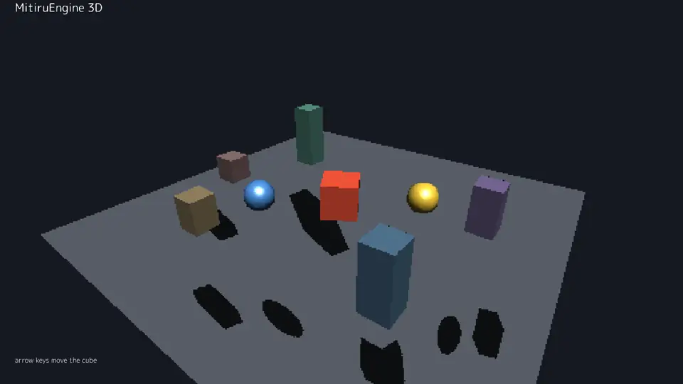

MitiruEngine
MitiruEngine3D
3D 表示
MitiruEngine の正面は 2D + HTML/CSS ですが、3D も出せます。やり方は素直で、ふだんのゲームの draw(Screen&) の中で s.camera3D でカメラを決め、s.drawMesh でメッシュを置くだけ。あとはエンジンの GPU 3D レンダラーが、アンチエイリアス（MSAA）と影（シャドウマップ）付きで描きます。2D の HUD はその上に重なります。状態は「数値だけ」なので同じ入力なら同じ結果——録画も巻き戻しも、2D ゲームと同じように効きます。

scene3d をそのまま録画したものです。足場・回る立方体・追従して周回する球・奥のピラーを、エンジンの GPU 3D レンダラーが アンチエイリアス（MSAA）と影（シャドウマップ）付きで描いています。矢印キーで中央の立方体を動かせます。文字（HUD）は 2D で、3D の上に重なっています。やっていること
3D は、ふだんのゲームの draw(Screen& s) の中で s.camera3D でカメラを決め、s.drawMesh で組み込みメッシュ（立方体・球・板）を置くだけです。あとはエンジンの GPU 3D レンダラーが アンチエイリアス（MSAA）と影（シャドウマップ）付きで描きます。s.light3D で光の向きを変えると、影もその向きに伸びます。HUD やメニューは、その 3D の上にいつもの 2D（s.text など）で重ねます。
s.drawMesh で置いたメッシュをエンジンの GPU 3D レンダラーが MSAA 付きで描き、その上に 2D の HUD を重ねます。コード
ゲームの形は 2D とまったく同じです。状態は struct に数値だけを持ち、update で動かし、draw で描く。3D を描くための道具（メッシュ・カメラ）はエンジンが持っているので、ゲーム側に重い struct メンバは要りません。状態が数値だけなら、同じ操作で同じ動きになる（→ 同じ入力なら同じ結果・録画・巻き戻し）。
#include <mitiru.hpp> #include <cmath> using namespace mitiru; struct Hello3D { float t = 0, cubeX = 0, cubeZ = 0; // 状態は数値だけ void update(Input in, float dt) { t += dt; if (in.down(Key::Left)) cubeX -= 4.5f * dt; // 矢印キーで立方体を動かす if (in.down(Key::Right)) cubeX += 4.5f * dt; } void draw(Screen& s) { s.clear(hex(0x111521)); // 3D の背景（足場の周りの闇） // カメラと光を決める（drawMesh の前に）。t で原点まわりを周回。 float yaw = t * 0.3f; s.camera3D({std::sin(yaw)*13, 8.5f, std::cos(yaw)*13}, // 視点 {0, 0.4f, 0}, 54); // 注視点・縦画角(度) s.light3D({-0.5f, -1, -0.4f}); // 平行光の向き // 組み込みメッシュ "cube"/"sphere"/"plane" を 位置・大きさ・回転(度)・色 で s.drawMesh("cube", {0, -0.15f, 0}, {14, 0.3f, 14}, {0,0,0}, hex(0x3A4250)); // 足場 s.drawMesh("cube", {cubeX, 0.7f, cubeZ}, {1.4f,1.4f,1.4f}, {0, t*60, 0}, hex(0xEA5535)); // 主役 s.drawMesh("sphere", {2.7f, 0.9f, 0}, {1.2f,1.2f,1.2f}, {0,0,0}, hex(0x4C95F2)); s.text("MitiruEngine 3D", 28, 22, color::White, 30); // HUD は 2D で上へ } }; MITIRU_GAME(Hello3D)
完全版（奥のピラーや、立方体を追従して周回する球まで入ったもの）は、リポジトリの examples/scene3d/ にあります。上のデモはそれをそのまま動かしたものです。
t と立方体の位置」だけ。エンジンはこの状態（ポインタを持たない、数値だけの 1 個の struct）をまるごと保存・復元できるので、この 3D ゲームも 2D と同じくホットリロード・巻き戻し・リプレイの対象になります（→ ⑩ 乱数・巻き戻し・AI 連携）。絵は毎フレーム同じ状態から描き直されます。いまの 3D と、これから
GPU で描くのでエッジはなめらか（MSAA）です。いまの 3D は「2D に 3D を混ぜる」「小〜中規模の 3D を出す」ための道具で、立方体・球・板の組み込みメッシュや読み込んだメッシュを並べ、影・半透明（WBOIT）・skybox まで扱えます。
| いまできること | 2D ゲームに 3D の小物・背景・ミニ表示を混ぜる／立方体・球・板・読み込んだメッシュを並べる／影・半透明・skybox／同じ結果の再現や巻き戻しが要る 3D |
| これから | 3D はまだ育てている途中です。表現できることは今後さらに拡充していく予定です |
位置づけは「2D エンジンで 3D も出せる」。正面はあくまで 2D + HTML/CSS ですが、その 3D も同じ状態モデル（ポインタを持たない、数値だけの 1 個の struct）に乗るので、2D と同じく録画・巻き戻し・ホットリロードがそのまま効きます。
はじめてのゲームtutorial
まず 2D で骨組み（struct / update / draw）を通すと、上のコードが読みやすくなります。
機能リファレンスfeatures
図形・文字・画像・入力・音・演出。やりたいことから逆引き。
画面を作るhtml ui
HUD やメニューは HTML / CSS で。3D の上に重ねる UI もこちら。